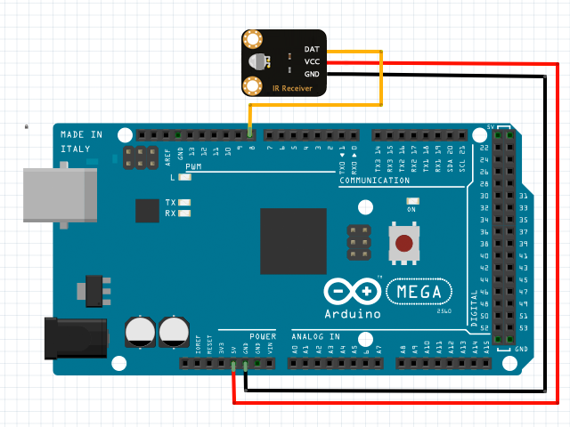

Received Bytes:

var receiver1 = new IRReceiver();
// set up an infrared receiver
receiver1.setup(
1, // unit 1
8 // pin 8
);
// set the callback for receiving bytes
receiver1.whenReceive = function(bytes) {
document.getElementById("status").innerHTML = "received data: " + bytes;
};
IRReceiver
setup(unit, pin)
initialize an infrared receiver object with a specified pin on a specified unit.
return value: true if successful, otherwise false.
Return Value Note:
The function will return a value when your h5control program uses waitRsp mode, but no return value when uses nowaitRsp mode.
whenSetup(done)
receive the callback when setup done. parameter done is true if successful or false otherwise.
whenReceive(bytes)
receive the callback when received the new incoming data carried in parameter bytes that is a byte array.